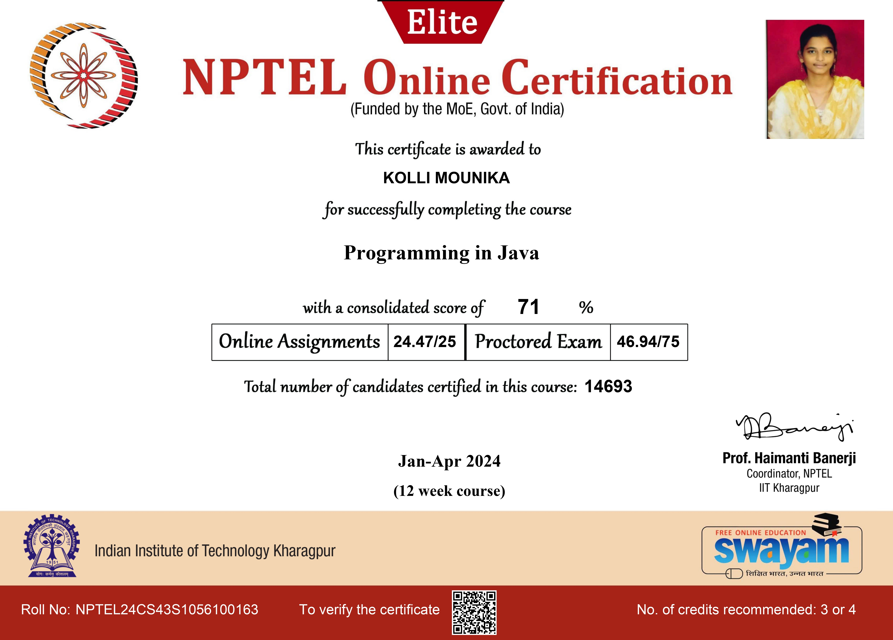

📜 Certifications
NPTEL Java Programming
Course Provider: NPTEL, IIT
About: Covered core Java programming, OOP principles, multithreading, exception handling, and collections framework with practical examples.
Experience Gained: Built a strong understanding of object-oriented programming. Created mini Java-based projects and improved debugging and coding efficiency.

C Programming – Cisco Networking Academy
Course Provider: Cisco Academy
About: Focused on C programming basics including data types, loops, arrays, and functions along with problem-solving techniques.
Experience Gained: Learned structured programming and logic building for foundational development. Improved algorithmic thinking and code writing style.
Power BI Workshop
Event: Hands-on Workshop
About: Introduced data modeling, dashboards, and visualization techniques using Microsoft Power BI.
Experience Gained: Learned to design interactive dashboards, connect datasets, and derive insights. Developed basic data storytelling skills.

MERN Stack Internship Project
Event: ShopSmart: Your Digital Grocery Store Experience - MERN Stack Project
About: A MERN stack grocery web app enabling customers to shop online, sellers to manage inventory, and admins to monitor activities.
Experience Gained: Learned full stack development, implemented JWT authentication, integrated MongoDB , and gained skills in APIs, secure transactions, and debugging.